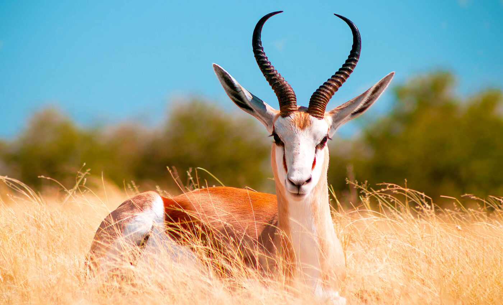
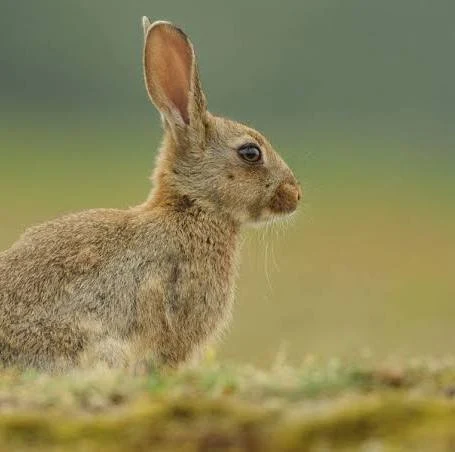
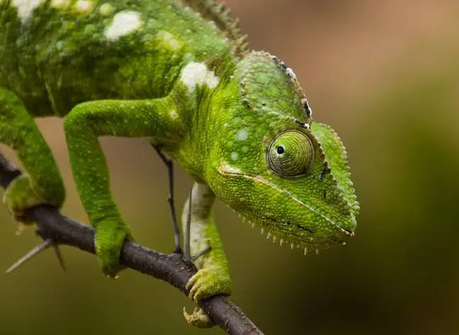
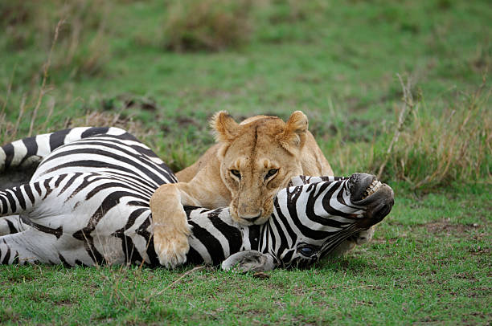
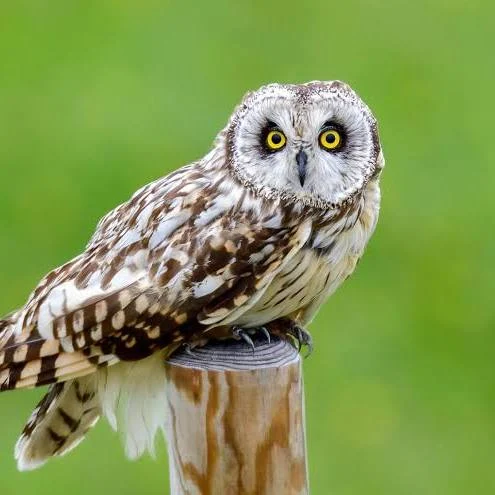
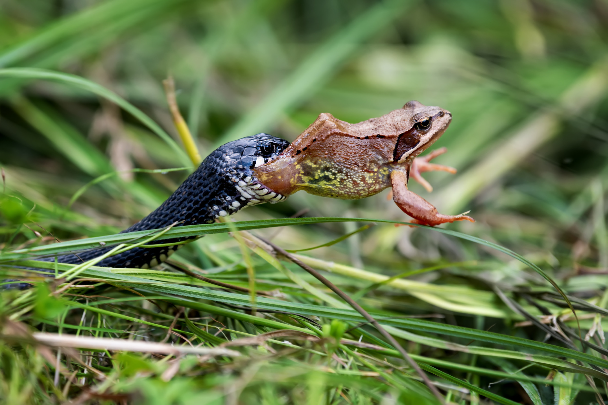
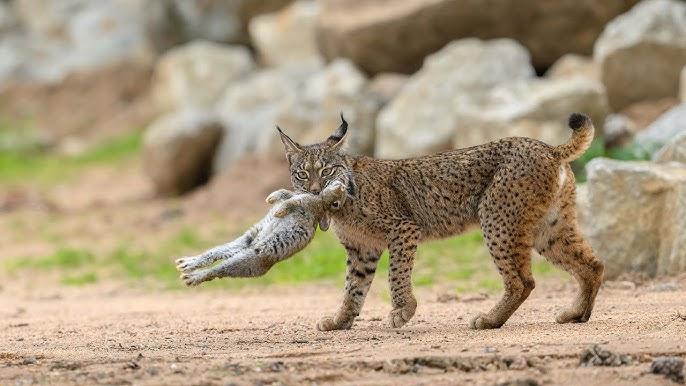
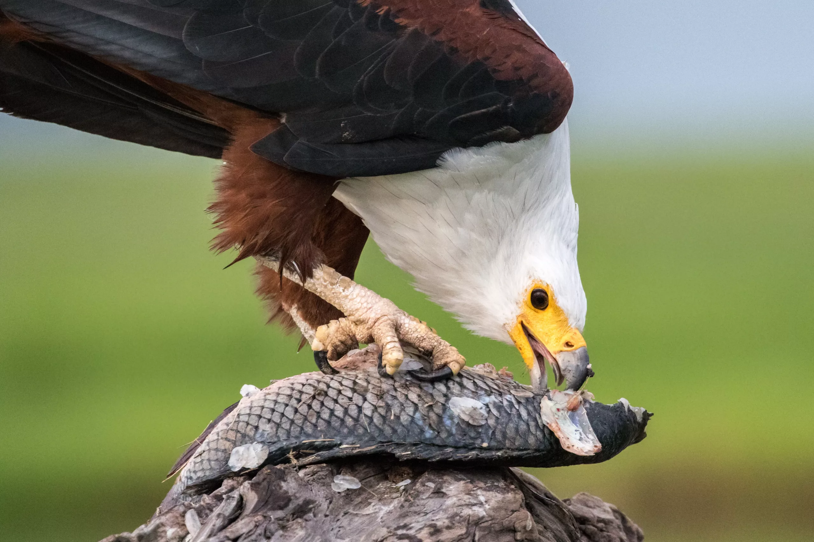

AV – AVCI (PREDATÖR–AV) İLİŞKİSİ
10. Sınıf Biyoloji • Canva Görsel İnfografiği AV (PREY) Kurban

🔹 Tanım: Besin zincirinin alt basamağında yer alan, başka canlılar tarafından tüketilen organizma.
AVCI (PREDATOR) Yırtıcı

🔹 Tanım: Enerji ihtiyacını başka canlıları avlayarak karşılayan organizma.
Ekosistemdeki Rolü

🔹 Avcılar, hasta ve zayıf bireyleri ayıklayarak popülasyonu sağlıklı tutar.
Popülasyon Dengesi

🔹 Av ve avcı sayıları birbirini dengeleyen döngüsel bir ilişki içindedir.
Doğal Seçilim

🔹 Kamuflaj, hız, zehir gibi adaptasyonlar evrimi şekillendirir.
Av Özellikleri & Savunma

🔹 Sürü oluşturma, kamuflaj, zehir, hız, dikenler…
Avcı Özellikleri & Avlanma

🔹 Keskin duyular, hız, gizlenme, iş birliği, pençe-diş yapısı.
Doğadan Av-Avcı Örnekleri

Aslan → Zebra (Savana)

Köpekbalığı → Fok (Okyanus)

Örümcek → Sinek (Karasal)

Baykuş → Fare (Gece)

Kurt → Geyik (Orman)

Yılan → Kurbağa (Sulak alan)

Vaşak → Tavşan (Kuzey)

Kartal → Balık (Göl/Nehir)
Av-Avcı İlişkisi: Detaylı İnceleme
Av Savunmaları
- Kamuflaj – bukalemun, çekirge
- Zehir – ok kurbağası, arı
- Sürü yaşamı – zebra, balık
- Taklit – uğurböceği taklidi
Canva: zehirli_kurbaga, kamuflaj_bocek
Avcı Adaptasyonları
- Hız – çita (120 km/s)
- Keskin duyular – baykuş (gece görüşü)
- İş birliği – kurt sürüsü
- Gizlenme – kaplan çizgileri
Canva: cita_kovalamaca, kurt_surusu
Popülasyon Döngüsü
Kanada vaşağı & tavşanı örneği: Tavşan artar → vaşak artar → tavşan azalır → vaşak azalır → döngü devam eder.
Canva grafik: avci_av_grafik.png
Bilgi: Av-avcı ilişkisi ekosistemin sağlıklı işlemesi için şarttır. Doğal dengeyi korur, evrimsel süreci hızlandırır.